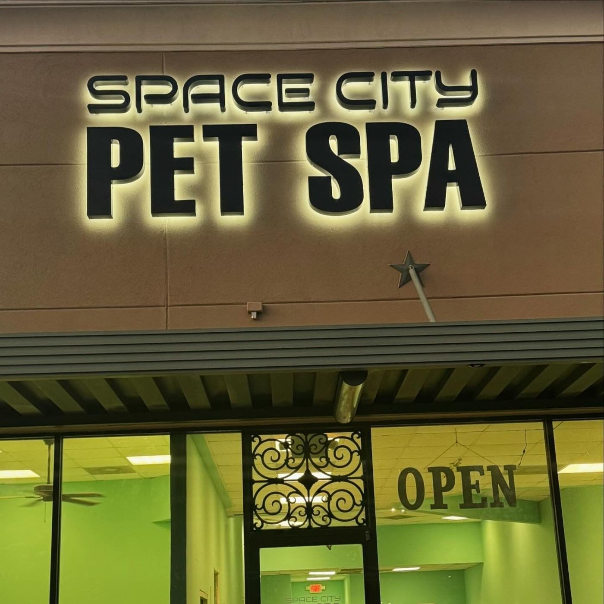
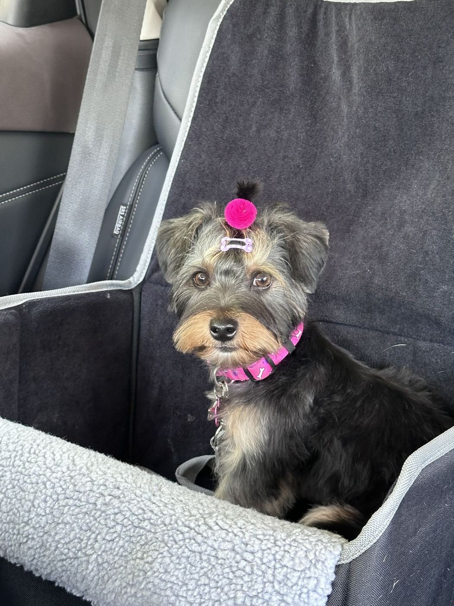
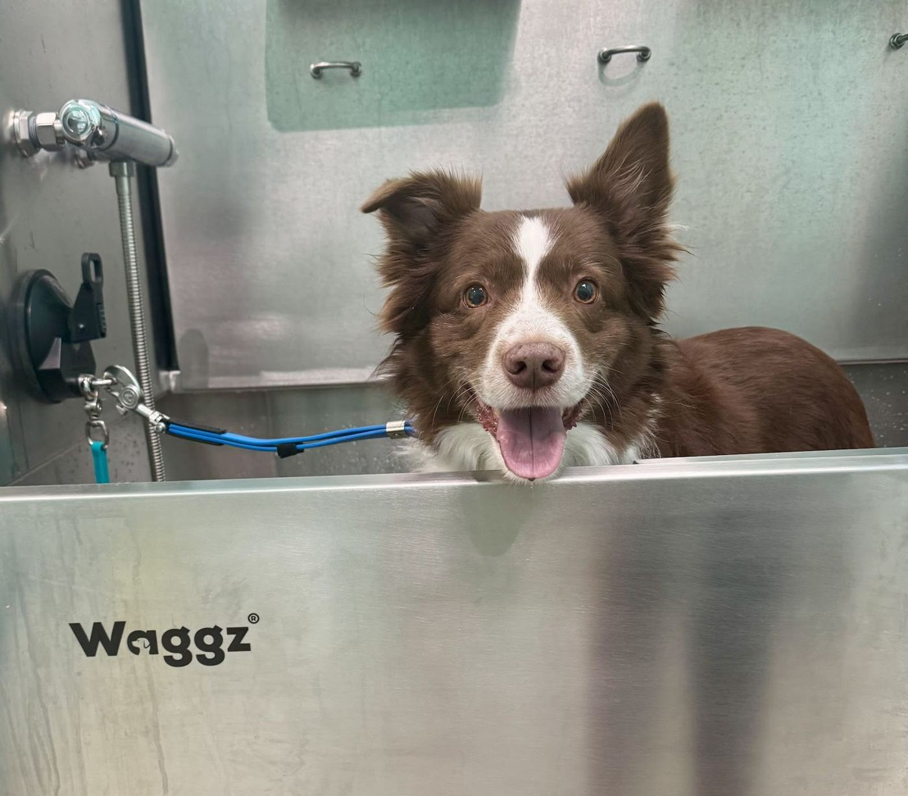
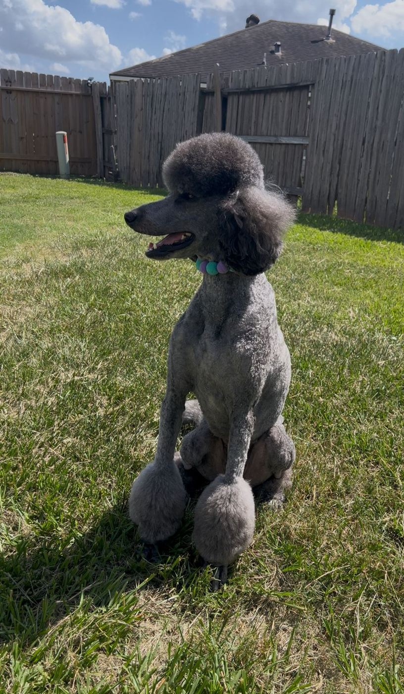

Grooming & self-wash · Houston, TX
Out-of-this-world grooming.
Full grooms, baths and a self-wash for big dogs on W Lake Houston Pkwy, with gentle care from Ginger and her crew.
5.0★ · 17 Google reviews

Mission menu
Full groomingHaircuts customers say turn out even better than they pictured.
BathsGentle, thorough baths done efficiently.
Self-washWash your own big dogs at the shop.
Puppy cutsKind, gentle first haircuts.



Barks of approval
I am so pleased with the grooming services. I have used the self wash many times for my two big dogs. Recently I took my little dog for a full grooming. She needed it! And they did such an amazing job. Recommend them and support your local small businesses.
Nala’s first haircut was perfect!! Ginger was incredibly kind and gentle with her ,I could tell she truly cared. She made Nala look absolutely beautiful. I’m so happy with the result. Thank you, Ginger!!
I ABSOLUTELY love to bring my girl here, she is always treated with so much care and the haircuts are always better than what we envisioned, she loves to come here and we are very please with their service.
Book a launch window
13157 W Lake Houston Pkwy, Houston, TX 77044